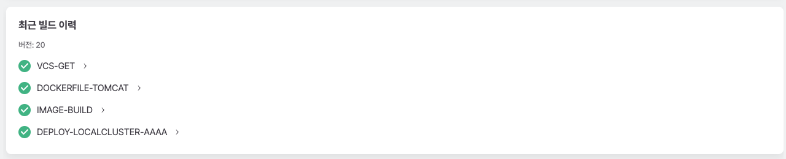
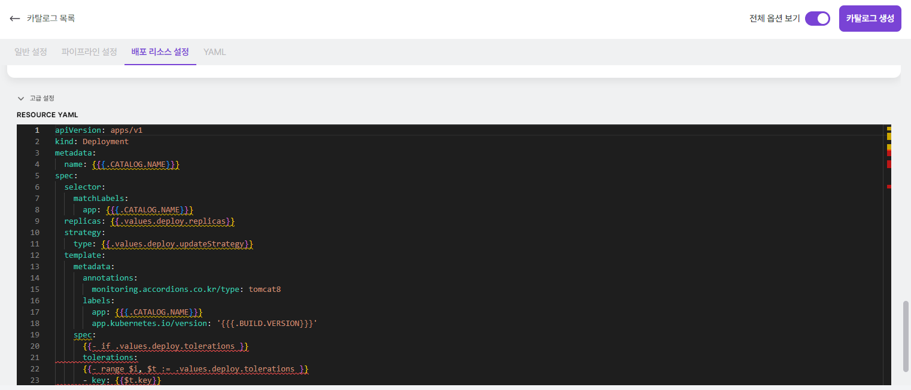
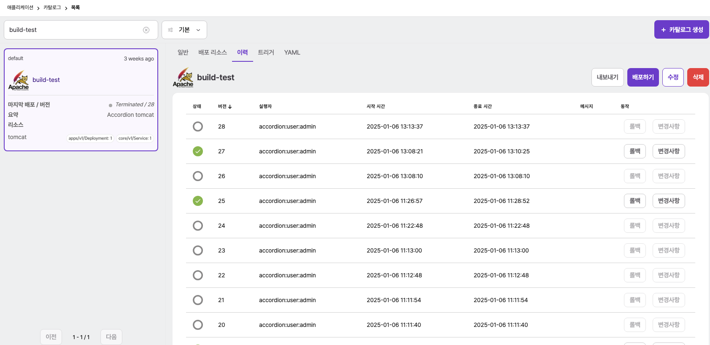
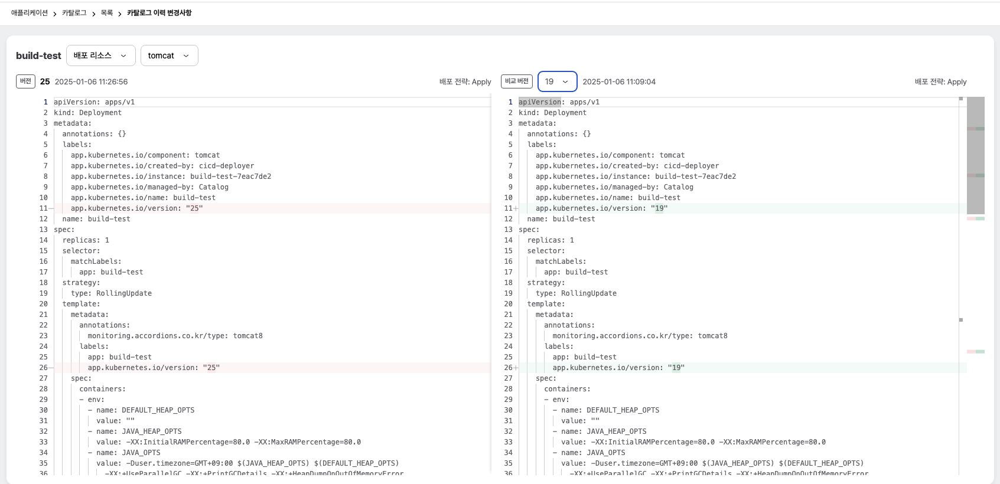

애플리케이션
네임스페이스 스코프에 있는 애플리케이션은 사용자가 헬름 차트 또는 카탈로그 템플릿을 이용해 애플레케이션을 배포할 수 있도록 기능을 제공한다. 그중 헬름 차트를 이용한 배포는 클러스터 스코프의 애플리케이션에 있는 헬름 메뉴의 기능과 스코프를 제외하고 동일하기 때문에 해당 가이드를 참고한다. 본 장에서는 카탈로그 메뉴에서 카탈로그 템플릿을 이용해 애플리케이션을 배포하고 관리하는 방법을 알아본다.
카탈로그
카탈로그는 카탈로그 템플릿을 이용해 쿠버네티스 리소스를 배포하는 아코디언만의 관리 도구이다. 카탈로그의 특징은 다음과 같다.
| 특징 | 설명 |
|---|---|
다양한 쿠버네티스 리소스 배포 |
디플로이먼트, 스테이트풀셋 등 코어 리소스를 포함하여 커스텀 리소스도 배포할 수 있다. |
지속적인 배포 |
카탈로그로 배포한 리소스 집합에 대해 업그레이드 배포 등 라이플사이클을 관리할 수 있다. |
배포 이력 관리 |
배포를 수행한 시점의 스펙과 수행을 요청한 사용자 등의 이력을 관리한다. |
롤백 |
기존에 성공적으로 배포된 이력에 기술된 배포 리소스 스펙으로 리소스만 다시 생성한다. |
다양한 배포 정책 |
단일 카탈로그를 구성하는 리소스들에 대해서도 리소스 각자의 배포 정책을 가져갈 수 있다. |
이력 버전별 비교 및 배포(롤백)미리보기 |
배포 리소스 또는 파이프라인의 변경 사항을 버전별로 비교하고, 배포(롤백) 전에 미리보기를 통해 변경 내용을 확인할 수 있다. |
멀티클러스터 배포 지원 |
아코디언에서 관리되는 클러스터에 대해 서로 다른 네임스페이스와 클러스터에 동일한 배포와 라이플사이클을 가져갈 수 있다. |
파이프라인 연계 |
소스에서 컨테이너 이미지를 만들거나, 승인을 포함한 배포 등 다양한 파이프라인 연계를 통해서 배포할 수 있다. |
|
카탈로그와 카탈로그 템플릿의 관계는 헬름 릴리즈와 헬름 차트의 관계와 유사하다. 카탈로그 템플릿은 배포에 필요한 쿠버네티스 리소스 정보와 변수 정보같은 카탈로그 스펙을 가지고 있다. 사용자가 카탈로그 템플릿으로 카탈로그를 생성하면 시스템이 카탈로그 정보를 이용해 애플리케이션을 배포한다. |
카탈로그 메뉴에서는 카탈로그에 대한 설명과 리소스 구성, 배포 내역을 확인할 수 있다.
| 항목 | 설명 |
|---|---|
일반 |
카탈로그에 대한 기본 정보와 배포 현황에 대한 정보 제공

|
배포 리소스 |
카탈로그로 배포한 쿠버네티스 리소스 정보 제공 |
이력 |
카탈로그로 배포한 이력 정보 제공 및 배포 관리
|
YAML |
카탈로그에 대한 쿠버네티스 리소스 관리 |
트리거 |
이벤트 발행을 감지하여 카탈로그를 배포 하거나 트리거의 동작을 수행 |
카탈로그 생성
카탈로그 메뉴의 + 카탈로그 생성 버튼을 클릭하면 카탈로그 생성에 필요한 카탈로그 템플릿을 선택할 수 있다.
|
아코디언은 Tomcat, Wildfly 등에 대한 템플릿을 기본 제공하며 카탈로그 템플릿은 추가하거나 변경할 수 있다. 만약 템플릿을 사용하지 않고 카탈로그를 생성하고 싶다면 우측 상단의 |
템플릿 사용 버튼을 통해 생성할 카탈로그에 대한 템플릿을 선택하면 카탈로그 설정 화면으로 넘어간다. 다음 화면에서는
카탈로그의 이름과 파이프라인, 배포리소스와 같은 카탈로그를 생성하기 위해 필요한 기본 설정들만 입력한 뒤
우측 상단의 카탈로그 생성 버튼을 클릭하여 카탈로그를 간단하게 생성시킬 수 있다.
우측 상단의 전체 옵션 보기 토글 버튼을 클릭하면 더 자세한 설정을 선택할 수 있다.
해당 토글을 활성화하면 보이는 일반 설정에서는 카탈로그의 이름이나 설명, 로고 이미지와 같은 생성하려는 카탈로그에 대한 기본 정보를 자세히 입력한다.
| 항목 | 설명 |
|---|---|
이름 |
카탈로그 이름 |
요약 |
카탈로그에 대한 간단한 설명 (생성 후 목록 정보에서 표시) |
상세설명 |
카탈로그에 대한 상세한 설명 (생성 후 마크다운 형식으로 표시) |
로고 이미지 |
카탈로그의 로고 이미지 (미설정할 경우 템플릿의 로고로 설정) |
|
|
상단 탭의 파이프라인 설정 버튼으로 파이프라인에 대한 설정 화면으로 변경할 수 있다.
파이프라인 설정에서는 쿠버네티스 리소스를 배포하기 전에 수행하는 파이프라인에 대해 설정한다. 파이프라인은
기본 파이프라인 템플릿을 가지고 있으며 사용자는 이를 수정하여 배포하는 카탈로그마다 개별 설정할 수 있다.
상단 탭 배포 리소스 설정 버튼으로 쿠버네티스에 배포할 리소스에 대한 설정화면으로 변경할 수 있다.
배포 리소스 설정에서는 환경변수 또는 시스템 리소스 할당과 같이 카탈로그로 배포하는 쿠버네티스 리소스에 대한
정보를 입력한다.
|

|
상단 탭 YAML 버튼으로 카탈로그를 구성하는 정보를 YAML 편집기로 확인하거나 UI에서 설정할 수 없는 정보를 수정할 수 있다.
YAML 편집기를 통해 카탈로그를 보면 예약된 환경변수를 볼 수 있다. 카탈로그에서 예약된 환경변수는 다음과 같다.
| 이름 | 환경변수 표현식 | 추가설명 |
|---|---|---|
카탈로그 이름 |
|
카탈로그의 이름 |
카탈로그 네임스페이스 |
|
카탈로그가 배포된 네임스페이스 이름 |
이미지 레지스트리 |
|
|
이미지 이름 |
|
|
이미지 태그 |
|
|
이미지 이름 패턴 |
|
|
레지스트리 서버 |
|
|
레지스트리 사용자이름 |
|
|
이미지 이름 환경변수는 레지스트리와 사용자 환경변수에 따라 적용된다.
이미지 이름의 생성 규칙과 관련 환경변수 설정은 다음과 같다.
| INPUT | OUTPUT |
|---|---|
일반 형식
|
|
Dockerhub
|
|
스코프를 포함하는 경우
|
|
이미지 태그를 사용하는 경우
|
이미지 이름의 태그 변경 : 빌드버전 ⇒ 태그
|
이미지 이름을 사용하는 경우
|
설정한 이미지 이름 고정
|
이미지 이름과 이미지 태그를 같이 사용하는 경우
|
이미지 태그 무시
|
모든 설정이 끝나면 카탈로그 생성 버튼을 선택하여 카탈로그 생성을 마친다. 카탈로그가 생성되었다고하여 실제
애플리케이션이 배포된 것은 아니다. 카탈로그 목록에서 방금 작성한 카탈로그를 선택하고 배포하기 버튼을 선택하면 신규 배포 전 변경 사항을 현재 버전과 미리보기 버전을 비교할 수 있는 Diff UI 화면으로 이동한다.
실제 배포가 수행되면 적용될 변경 사항을 현재 버전과 비교하여 미리보기 기능을 제공한다. 배포 리소스, 파이프라인 각각의 변경 사항을 확인할 수 있으며 배포리소스일 경우 우측의 리소스 그룹 을 선택하여 리소스 그룹별로 변경 사항을 확인할 수 있다.
해당 페이지에서 우측 상단의 배포하기 버튼을 선택해야 파이프라인을 통해 애플리케이션이 배포된다.
배포리소스만 적용 을 선택하여 배포할 경우 가장 최근 배포한 빌드의 이미지를 사용하여 현재 카탈로그에 정의된 스펙으로 리소스 배포만 진행한다. 가장 최근 배포한 빌드의 이미지는 2.9.0 업그레이드 이후 배포한 이미지만 해당한다.
2.9.0 이전 버전의 빌드 이미지로는 배포리소스만 적용 하여 배포가 불가능하며, 해당 기능을 사용하려면 업그레이드 이후 최소 1번의 배포를 진행해야 한다.
배포시 요약 필드는 필수값은 아니지만 애플리케이션 관리를 위해 설정을 권장한다.
|
이력
배포한 카탈로그의 이력들을 확인할 수 있다.
특정 이력에 대한 롤백 기능, 이력별 변경 사항 확인 및 해당 이력들을 csv 파일로 추출하는 내보내기 기능을 제공한다.
롤백의 경우, 배포리소스만 적용 기능을 사용할 수 없다.

이력별 변경 사항 확인
이력에서 선택한 특정 버전을 기준으로 성공한 다른 버전과의 변경 사항을 비교할 수 있다.
빌드가 성공한 버전에 한하여 선택이 가능하며 변경사항 버튼을 클릭하여 비교 페이지로 이동할 수 있다.

비교는 배포 리소스와 파이프라인 두 가지 타입에 한해 가능하며, 배포 리소스의 경우 하위 리소스 그룹별로 변경 사항을 비교할 수 있다.
기본값은 배포 리소스 비교이며, 비교 기준이 되는 버전의 policy가 Redeploy 또는 Deploy가 아닌 경우에만 파이프라인 비교가 가능하다.
또한, 선택 가능한 비교 버전은 빌드가 성공한 버전에 한하며, 파이프라인의 경우 추가적으로 policy가 Redeploy 또는 Deploy가 아닌 버전만 비교할 수 있다.
트리거
트리거는 카탈로그/파이프라인을 대상으로 하며, 이벤트 발생을 기준으로 2가지로 나뉜다.
| 종류 | 설명 |
|---|---|
예약 액션 트리거 |
주기적으로 등록된 이벤트를 감지, 대상이 되는 카탈로그/파이프라인을 실행 |
빌드 후 액션 트리거 |
카탈로그/파이프라인이 배포 또는 빌드된 이후 동작을 수행 |
예약 액션 트리거
예약 액션 트리거는 등록된 스케줄에 따라 주기적으로 동작하며 이벤트가 감지 되면 빌드(배포)를 수행한다.
아래는 사용 가능한 예약 액션 트리거의 종류이다.
| 트리거 이름 | 설명 |
|---|---|
버전관리 시스템의 저장소 변경 감지 트리거 |
빌드의 메타데이터를 기반으로 원격저장소의 변경을 감지 |
컨테이너 이미지 변경 감지 트리거 |
빌드의 메타데이터를 기반으로 컨테이너 이미지 변경을 감지 또는
빌드의 |
http 요청에 대한 응답 감지 트리거 |
http 요청을 통해서 응답 데이터를 감지 |
정기적으로 트리거 실행 |
등록된 스케줄 주기 마다 빌드(배포)를 수행 |
스케쥴
-
Cron 방식으로 등록한다.
-
스케쥴의 경우, 3-5분 이상 으로 등록하길 권장한다.
-
기본값 :
0/5 * * * *
버전관리 시스템의 저장소 변경 감지 트리거
vcs 태스크의 메타데이터를 원격 저장소와 비교하여, 변경 사항을 감지한다.
git 또는 svn 을 지원한다.
해당 트리거는 빌드 메타데이터를 기반으로 동작하며, vcs에 따라 아래와 같은 필수값이 필요하다.
git 는 아래와 같다.
| 메타데이터 | 설명 | 예시 |
|---|---|---|
vcs |
git |
git |
repo |
원격 저장소 |
|
ref |
저장소 레퍼런스 |
master |
commit |
커밋 정보 |
320a4819fe5b5dcb1892e263620d79849b83012e |
svn 는 아래와 같다.
| 메타데이터 | 설명 | 예시 |
|---|---|---|
vcs |
svn |
svn |
repo |
원격 저장소 |
svn://acc@xx.xx.xx.xx/hello |
revision |
리비전 |
5 |
컨테이너 이미지 변경 감지 트리거
컨테이너 이미지의 변경 사항을 감지한다.
컨테이너 내부/외부 이미지 설정을 통해 감지할 이미지 대상을 설정할 수 있다.
내부 이미지 감지
내부 이미지 설정 의 지원되는 레지스트리 저장소는 DockerHub 또는 Registry API 2.0 을 지원해야 한다.
내부 이미지 설정 의 메타데이터 필수값은 아래와 같다.
| 메타데이터 | 예시 | 설명 |
|---|---|---|
|
docker.io/accordions/tmapp-03404282:2 |
컨테이너 이미지 |
|
sha256:13be6694216a8bdc62fcb6c112b2165ff43341eddbddb88a39a17329d5bb8aaa |
이미지 digest로 mode가 digest 인 경우 필수 |
외부 이미지 감지
catalog 를 대상으로만 동작한다.
외부 이미지 감지 는 내부 이미지 감지 와 달리 빌드의 메타데이터에서 정보를 가져오는 것이 아닌
아래와 같이 빌드의 spec.env.EXTERNALIMAGE 정보를 통해 이미지 변경을 감지한다.
spec:
env:
EXTERNALIMAGE:
DIGEST: sha256:9822b71cd6b28545703fde132adb98cd1057ea387e41c1d84a254486feb3c2cc
NAME: image
REGISTRYNAME: user-registrycatalog 의 spec.deployStrategy.externalImage 에 아래와 같이 등록할 정보를 입력하고
빌드 또는 배포하면 위와 같이 빌드의 spec.env.EXTERNALIMAGE 에 정보가 등록된다.
spec:
deployStrategy:
externalImage:
name: "image"
registryName: user-registry빌드 후 액션 트리거
사용 가능한 트리거의 종류이다.
| 트리거 이름 | 설명 |
|---|---|
카탈로그/파이프라인 빌드(배포) 트리거 |
같은 클러스터의 다른 카탈로그/파이프라인을 빌드(배포) |
웹훅 전달 트리거 |
대상 객체와 빌드 정보를 http로 보내준다. |
트리거 등록
트리거 탭 을 선택 한 뒤 트리거 생성 버튼을 클릭
예약 액션 트리거 또는 빌드 후 액션 트리거 를 선택한다.
클릭하면 이름, 타입, 옵션 을 입력할 수 있는 화면이 나타난다.
-
이름은 해당 트리거에 대한 이름을 설정할 수 있다
-
타입은 트리거의 타입을 선택할 수 있다.
-
옵션은 선택한 트리거에서 필요한 옵션의 키와 밸류를 입력 한다.
예약 액션 트리거 등록시에는 스케줄 셀렉트박스를 클릭하면 기본으로 설정되어 있는 스케줄을 설정할 수 있다.
직접 스케줄 설정 작성시 아래와 같이 크론 스케줄 포맷에 의해 작성할수도 있다.
| 시간 | 허용 가능 값 | 허용 가능 특수문자 |
|---|---|---|
분 |
0-59 |
* / , - |
시 |
0-23 |
* / , - |
일자 |
1-13 |
* / , - ? |
달 |
1-12 or JAN-DEC |
* / , - |
요일 |
0-6 or SUN-SAT |
* / , - ? |
스케줄 설정의 예는 아래와 같다.
1 9 1 11 * = 매년 11월 1일 오전 9시 1분에 동작
원하는 트리거 선택 및 키 밸류 값을 입력 후 우측 상단의 트리거 생성 버튼을 클릭한다.
버전관리 시스템의 저장소 변경 감지 트리거 추가
사용 되는 키는 다음과 같다
| 키 | 설명 |
|---|---|
트리거 수행 서비스 어카운트 |
권한이 없다면 빌드(배포)가 실패한다. |
버전관리 시스템의 저장소 인증 시크릿 |
vcs 저장소에 대한 인증 시크릿
지원되는 시크릿 타입 : |
vcs 카테고리 태스크 이름 |
카탈로그/파이프라인 사양(spec)에서 기술된 "vcs 카테고리 태스크" 로 자동 할당 (권장) |
컨테이너 이미지 변경 감지 트리거
내부 이미지
| 키 | 설명 |
|---|---|
트리거 수행 서비스 어카운트 |
빌드(배포)를 수행할 인증 서비스 어카운트 권한이 없다면 빌드(배포)가 실패한다. |
이미지 카테고리 태스크 이름 |
이미지 카테고리 태스크 이름 카탈로그/파이프라인 사양(spec)에서 기술된 "이미지 카테고리 태스크" 로 자동 할당 (권장) |
이미지 메타정보 대상 종류 |
카탈로그 또는 파이프라인을 지정할 수 있다. |
이미지 메타정보 (카탈로그/파이프라인)대상 지정 |
이미지 메타데이터를 가져올 카탈로그/파이프라인 대상 |
트리거 동작 모드 |
기본값은 트리거를 등록하는 대상 네임스페이스를 선택 하고 해당 네임스페이스의 카탈로그/파이프라인 대상을 선택할 수 있다. |
컨테이너 이미지 내부/외부 설정 |
감지할 이미지 대상의 종류를 설정한다. |
레지스트리 저장소에 대한 인증 시크릿 |
레지스트리 저장소에 대한 인증 시크릿 "task"에 해당하는 태스크 사양(spec)에서 지원되는 시크릿 타입 : |
http 요청에 대한 응답 감지 트리
| 키 | 설명 |
|---|---|
트리거 수행 서비스 어카운트 |
빌드(배포)를 수행할 인증 서비스 어카운트 권한이 없다면 빌드(배포)가 실패한다. |
요청대상이 되는 url |
|
응답 데이터와 비교할 데이터 |
응답 데이터와 비교할 데이터로 단순 문자열 또는 json직렬화 형식 |
응답 데이터 필터링 |
응답 데이터를 필터링하여 jsonpath 형식 |
요청에 포함되는 json직렬화 형식의 데이터 |
request body 에 포함되는 json 데이터 |
요청에 포함되는 메소드 |
http 메소드 |
요청에 포함되는 header 목록 |
http 요청에 사용되는 헤더를 여러개 등록할 수 있다. |
카탈로그/파이프라인 빌드(배포) 트리거
| 메타데이터 | 예시 |
|---|---|
트리거 수행 서비스 어카운트 |
빌드(배포)를 수행할 인증 서비스 어카운트 권한이 없다면 빌드(배포)가 실패한다. |
대상(카탈로그/파이프라인) 종류 |
빌드(배포) 대상의 종류 카탈로그 또는 파이프라인을 지정할 수 있다. |
빌드(배포)를 수행할 대상 지정 |
빌드(배포) 대상 네임스페이스를 선택 하고 해당 네임스페이스의 카탈로그/파이프라인 대상을 선택할 수 있다. |
트리거 수행 매칭 조건 빌드 상태 목록 |
사용가능한 phase '성공, 실패, 에러, 종료' 빌드 기본값 : |
웹훅 전달 트리거
| 메타데이터 | 예시 |
|---|---|
웹훅을 전달할 대상 url |
웹훅 호스트 |
타임아웃(기본값: 5s) |
webhook 전달시 timeout 으로 사용된다.
|
트리거 수행 매칭 조건 빌드 상태 목록 |
사용가능한 phase '성공, 실패, 에러, 종료' 빌드 기본값 : |
트리거 수행 서비스 어카운트 생성
클러스터 롤 권한이 없는 사용자인 경우 빌드(배포)를 수행할 대상의 네임스페이스는 현재 네임스페이스만 적용가능하다
|
서비스 어카운트 생성
서비스 어카운트 생성 방법은 해당 가이드를 참고 한다.
-
서비스 어카운트생성 예시
apiVersion: v1
kind: ServiceAccount
metadata:
name: tgr-build-executor
namespace: test롤과 롤바인딩 생성
현재 네임스페이스의 빌드(배포) 할 때 사용되는 권한을 설정한다.
롤 과 롤 바인딩 생성 방법은 해당 가이드를 참고 한다.
-
롤생성 예시-
기본으로 빌드(배포) 하는데 사용되는 권한이며
빌드(배포) 리소스에 대한 권한이 추가적으로 필요한 경우 기본으로 사용되는 권한과 필요한 권한을 추가하여 사용한다.
-
kind: Role
apiVersion: rbac.authorization.k8s.io/v1
metadata:
name: tgr-build-executor-role
namespace: test
rules:
- verbs:
- get, list, watch
apiGroups:
- cicd.accordions.co.kr
resources:
- pipelines, catalogs
- verbs:
- create
apiGroups:
- cicd.accordions.co.kr
resources:
- buildrequests-
롤 바인딩생성 예시
kind: RoleBinding
apiVersion: rbac.authorization.k8s.io/v1
metadata:
name: tgr-build-executor-rolebinding
namespace: test
subjects:
- kind: ServiceAccount
name: tgr-build-executor
namespace: test
roleRef:
apiGroup: rbac.authorization.k8s.io
kind: Role
name: tgr-build-executor-role클러스터 롤과 클러스터 롤 바인딩 생성
클러스터 롤 권한이 있는 경우 사용 가능하며 다른 네임스페이스의 빌드(배포) 할 때 사용되는 권한을 설정한다.
클러스터 롤, 클러스터 롤 바인딩 생성 방법은 해당 가이드를 참고 한다.
-
클러스터 롤생성 예시-
기본으로 빌드(배포) 하는데 사용되는 권한이며, 빌드(배포) 리소스에 대한 권한이 추가적으로 필요한 경우 기본으로 사용되는 권한과 필요한 권한을 추가하여 사용한다.
-
kind: ClusterRole
apiVersion: rbac.authorization.k8s.io/v1
metadata:
name: tgr-build-executor-clusterrole
rules:
- verbs:
- get, list, watch
apiGroups:
- cicd.accordions.co.kr
resources:
- pipelines, catalogs
- verbs:
- create
apiGroups:
- cicd.accordions.co.kr
resources:
- buildrequests-
클러스터 롤 바인딩생성 예시
kind: ClusterRoleBinding
apiVersion: rbac.authorization.k8s.io/v1
metadata:
name: tgr-build-executor-clusterrolebinding
subjects:
- kind: ServiceAccount
name: tgr-build-executor
namespace: test
roleRef:
apiGroup: rbac.authorization.k8s.io
kind: ClusterRole
name: tgr-build-executor-clusterrole트리거 목록
해당 카탈로그 또는 파이프라인에 등록된 트리거들의 목록을 확인할 수 있다.
실행 토글 버튼은 해당 트리거의 실행 여부를 설정하는 버튼이며 보라색으로 설정된 경우 동작하며,
회색으로 변경된 경우 동작하지 않는다.
변경 상태 는 해당 트리거의 상태 정보 이며 예약 액션 트리거 의 경우 성공 과 실패 가 있으며,
빌드 후 액션 트리거 의 경우 성공, 실패, 스킵 이 존재한다.
| 종류 | 설명 |
|---|---|
성공 |
트리거가 감지하여 작업을 수행한 경우 |
실패 |
트리거가 작업도중 실패한 경우 |
스킵 |
감지는 했으나 조건이 일치하지 않은 경우, 이미 빌드 중인 경우 |
최근 트리거 는 해당 트리거의 최근 동작 시간이며 예약 액션 트리거 의 경우 성공 또는 실패 시간만 나타낸다.
수행 주기 는 예약 액션 트리거 에서만 볼수 있고 해당 트리거의 스케줄을 나타낸다.
트리거 상세
원하는 트리거를 클릭 하면 상세 정보를 확인할 수 있다.
예약 액션 트리거 의 경우, 상단에서 실행 여부, 상태 메세지 를 확인할 수 있고
하단 표에서 조건 감지, 최근 체크시간, 키, 밸류 를 확인할 수 있다.
트리거의 조건 감지 종류는 아래와 같다.
조건 감지 는 예약 액션 트리거 의 트리거의 상태 정보 와 동일 하며 미감지 와 스킵 이 추가 된다.
| 종류 | 설명 |
|---|---|
미감지 |
|
최근 체크 시간 은 해당 트리거의 스케줄에 따라 주기적으로 감지를 시도한 시간이다.
빌드 후 액션 트리거 의, 경우 상단에서 실행 여부, 상태 메세지 를 확인할 수 있고
하단 표에서 키, 밸류 를 확인할 수 있다.
트리거 수정
트리거 우측의 수정 버튼을 클릭 하면 수정을 할 수 있는 상태가 된다.
옵션 추가하기 버튼을 클릭하여 새로운 옵션을 입력할 수 있다.
수정이 완료가 되면 우측 상단의 트리거 수정 버튼을 클릭하여 저장할 수 있고 또는 트리거 목록 버튼을 클릭하여
수정을 취소할 수 있다.
트리거 이벤트
트리거가 실제 수행되는 경우, 성공/실패에 대한 내용을 kubernetes event를 통하여 등록된다.
아래는 이벤트 예시이다.
49m Normal SucceededTrigger pipeline/hello Succeeded trigger for "build" : pipeline/default/image 48m Normal SucceededTrigger pipeline/hello Succeeded trigger for "request" : GET 'http://httpbin.org/ip' 50m Warning FailedTrigger pipeline/hello Failed trigger for "build" : xxxx
빌드 보관 정책
빌드시 늘어나는 빌드의 개수를 조절하기 위한 정책으로 조건에 맞는 빌드만 보관하고 나머지는 삭제하는 정책이다.
카탈로그/파이프라인의 다음과 같은 어노테이션으로 동작한다.
| 어노테이션 | 설명 |
|---|---|
cicd.accordions.co.kr/retention.count |
개수로 보관할 빌드의 개수를 정한다. |
cicd.accordions.co.kr/retention.period |
기간으로 보관할 빌드의 기간을 정한다. |